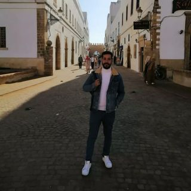

Le nom : Bouzzit
Le prénom : Abdellah
L'age : 22 Ans
Le numéro de telephone : +212 660549220
L'adresse : 14 , Rue Elkahtane Q. Elcourse
Objectif :
Diplomé d'une école de brevet de technicien superieur , je suis spécialisé en systèmes et réseaux informatique , j'ai choisi youcode car je trouve que cette derniére va m'aidé d'apprendre beaucoup des choses concernant la création de site web et je trouve aussi que sa formation est plus professionelle par rapport à bts ou les autres centres .
Profil Educatif:
Diplome de technicien superieur option Multimédia et conception web
Juin 2023
( Lycée Mohammed V , Essaouira )
Diplome de technicien superieur option Systmes et Réseaux Informatique
Septembre 2019 - Juin 2021
( Lycée Khawarizmi , Safi )
Baccalauréat Sciences et Technologies Mécanique
Septembre 2015 - Juin 2018
( Lycée Charif Elidrissi , Safi )
Expérience Professionnelles :
Technicien Supérieur
Mai 2021 - Juin 2021
( Celus Globale , Safi )
Centres d'intéret :